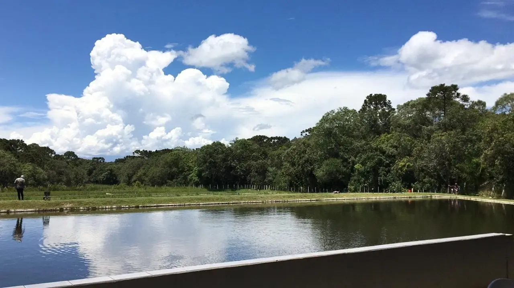

Conheça o sítio
Fotos de quando o pesque-pague estava funcionando. Toque em qualquer foto para ampliar.
Estrutura
A parte mais cara de um pesque-pague já está construída: tanques, restaurante e casas.
4 tanques de peixe
Revestidos, com viveiros. Já tiveram tilápia, catfish e piauçu.
Restaurante
Prédio amplo de alvenaria, de frente para os tanques.
Duas casas
Casa de alvenaria ao lado do galpão e casa de madeira com varanda.
Área com churrasqueira
Espaço coberto de alvenaria para receber grupos.
3 chalés a concluir
Obra iniciada e não terminada. Base para hospedagem e turismo rural.
Natureza e espaço
Araucárias, mata nativa, gramados e estacionamento amplo.

Estrutura pronta, a poucos minutos de Ponta Grossa
Situação atual, sem surpresas
O pesque-pague funcionou por anos e parou apenas por questões administrativas do antigo arrendamento, não por problema no negócio.
O que já está pronto
- Tanques revestidos e viveiros
- Restaurante de alvenaria
- Casa de alvenaria e casa de madeira
- Churrasqueira e estacionamento
O que precisa para reabrir
- Nova captação de água: o poço que abastecia os tanques secou
- Roçada e limpeza do terreno
- Concluir os 3 chalés, se quiser hospedagem
Localização
- Bairro
- Distrito de Guaragi, zona rural de Ponta Grossa/PR
- CEP
- 84120-000
- Região
- Campos Gerais, perto de Ponta Grossa e com acesso a Curitiba
- Visitas
- A localização exata é enviada pelo WhatsApp ao agendar a visita
Perguntas frequentes
Por que o pesque-pague está parado?
Ficou parado por questões administrativas do antigo arrendamento. O negócio em si funcionou bem por anos.
O que precisa para voltar a funcionar?
Nova captação de água, porque o poço que abastecia os tanques secou, e uma roçada no terreno. Tanques, viveiros e restaurante já estão construídos.
Os chalés estão prontos?
Não. São três chalés com a obra iniciada, que ainda precisam ser concluídos.
Aceita troca?
Sim. Aceito casa ou terreno de até R$ 1 milhão como parte do pagamento, mais R$ 590 mil em dinheiro. Conte pelo WhatsApp o que você tem para oferecer.
Como faço para visitar?
Chame no WhatsApp para combinar dia e horário.
Sou corretor. Posso trabalhar o imóvel?
Pode. A venda é sem exclusividade e a comissão é combinada direto com o proprietário.
Quer visitar ou fazer uma proposta?
Preencha abaixo e a mensagem fica pronta para enviar no WhatsApp do proprietário. Se preferir, chame direto.
WhatsApp do proprietário: (47) 99783-3437 · André